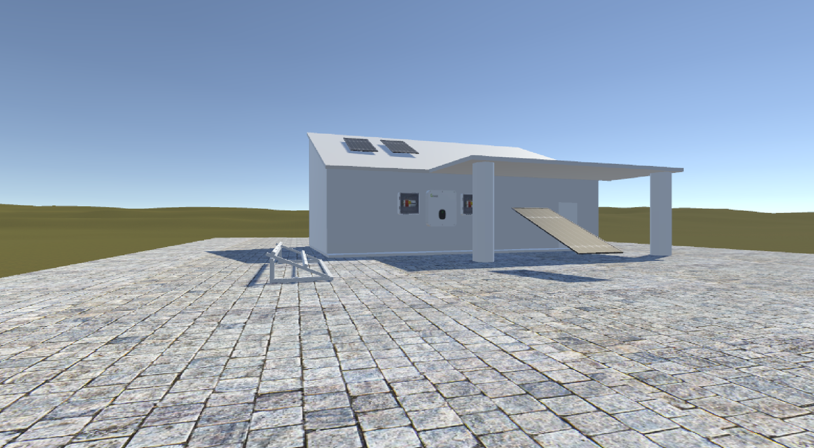

Inicial
projeto
sobre
contatos

apresentamos hoje o nosso projeto inovador: um jogo
de simulação de instalação de painéis solares.
Este jogo foi desenvolvido com o intuito
de fornecer uma experiência interativa e educativa, abordando
um tema fundamental para o futuro sustentável
do nosso planeta: a energia solar.Objetivo do Jogo
O principal objetivo do jogo é proporcionar
aos jogadores uma compreensão prática de como
funciona a instalação de painéis solares
em ambientes reais. Através de uma série de desafios
e missões, o jogador será guiado por todo o processo
de instalação, desde a escolha do local
adequado até a configuração do sistema de painéis solares
para otimizar a produção de energia.
Bem-vindo
projetos